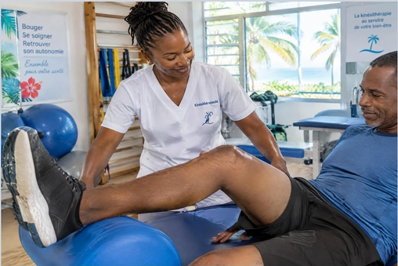
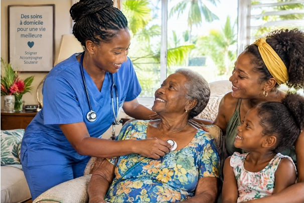
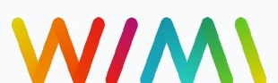
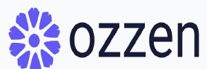

L'AVENANT 11 : LA NOUVELLE ÈRE DES SOIGNANTS LIBÉRAUX
Signé entre l'Assurance Maladie et les syndicats représentatifs, l'Avenant 11 transforme en profondeur l'exercice et la tarification des soignants libéraux. Décryptage exclusif des quatre réformes clés et de leur impact immédiat avec la majoration territoriale légale de +20 % dans les départements d'Outre-Mer.
1 Tarification actesAMI 4,02 € dans les DOM
Revalorisation de la lettre-clé AMI & Règle du cumul
Dans les DOM, la lettre-clé AMI atteint 4,02 € grâce à la majoration territoriale légale de +20 %. Avancée majeure : le deuxième acte technique réalisé lors d'un même passage est désormais rémunéré à 100 % (fin du demi-tarif à 50 %).
• Exemple : Prise de sang (AMI 1,5) + Pansement simple (AMI 2) = 100 % des deux actes valorisés à 4,02 € l'unité.
> Impact DOM : Gain net direct de +15 % à +25 % par tournée pour les IDEL d'Outre-Mer sans allonger le temps de soin.
2 Dépendance & soinsForfaits BSI DOM sécurisés
Généralisation du BSI à l'ensemble des patients
Clôture définitive de la DSI papier. Application exclusive de la grille tarifaire officielle des forfaits journaliers BSI dans les DOM :
• Forfait prise en charge légère (BSA DOM) = 13,25 € / jour
• Forfait prise en charge intermédiaire (BSB DOM) = 18,55 € / jour
• Forfait prise en charge lourde (BSC DOM) = 29,25 € / jour
Traçabilité numérique obligatoire de chaque passage.
• Clé de gestion : Évaluation clinique rigoureuse pour sécuriser le niveau de forfait sans risque de déclassement caisse.
> Impact DOM : Trésorerie mensualisée stable et sécurisée sur les prises en charge de dépendance lourde.
3 Soins spécifiquesDispositions au 1er janvier 2027
Pansements : Accès direct, Bilan AMI 3,48 & MCI
• Accès direct dès le 1er janvier 2027 : prise en charge et facturation en autonomie des pansements de plaies non chirurgicales (plaies aiguës, chroniques, ulcères, escarres) sans prescription médicale préalable. • Bilan annuel de plaie à risque : nouvelle cotation AMI 3,48 effective au 1er janvier 2027 (un bilan annuel par patient, pansement inclus, compte-rendu versé au DMP). • Traçabilité CGSS : maintien strict de la majoration MCI à 5,00 € par passage et rappel strict de l'obligation des photos datées pour bloquer les indus et rejets caisse.
• Exemple : AMI 4 (16,08 € DOM) + MCI (5,00 €) + IFI/IK = acte hautement valorisé et sécurisé.
> Impact DOM : Reconnaissance financière juste des soins chroniques lourds et autonomie de prescription renforcée.
Consécration de l'IDEL dans le suivi des Affections de Longue Durée (ALD). Deux consultations cliniques autonomes sont valorisées à 24,00 € dans les DOM (majoration légale +20 %) : accompagnement diabétique (CIA) et bilan prévention (CIB).
• Statut d'Infirmier Référent : Rémunération dédiée de l'éducation thérapeutique et de la coordination au domicile.
> Impact DOM : Diversification des revenus et valorisation pérenne de l'expertise clinique.
Le point de vigilance CGSS pour zéro rejet
Face au durcissement des contrôles des caisses CGSS en Guadeloupe, Martinique, Guyane et à La Réunion, la rigueur de cotation est vitale : • Traçabilité des pansements : joindre obligatoirement une photo datée pour justifier la cotation du pansement lourd. • Ordonnances conformes : vérifier systématiquement les dates de validité et les mentions de renouvellement. • Sécurisation HelpMed DOM : notre coordinatrice administrative filtre et contrôle chaque dossier en amont pour garantir zéro rejet et zéro indu caisse.
★ Découvrez en page 2 la Solution Premium HelpMed DOM, votre conciergerie clé en main →
NOUVEAU FOCUS : VEILLE STRATÉGIQUE KINÉ (3 AVANCÉES MAJEURES)
Élargissement du droit de prescription (Arrêté du 14 septembre 2026)Les masseurs-kinésithérapeutes peuvent désormais prescrire directement des dispositifs médicaux (lits médicalisés, matériel de maintien à domicile, barres d'appui), pansements, orthèses et antalgiques de niveau 1.
« Mon Bilan Prévention » à 30 € pris en charge à 100 %Ouvert officiellement aux kinés depuis le 1er octobre 2026, pris en charge à 100 % par l'Assurance Maladie sans aucune avance de frais pour le patient.
Accès direct en exercice coordonné (Loi Rist)Prise en charge directe jusqu'à 8 séances sans ordonnance médicale préalable au sein des structures d'exercice coordonné (CPTS, MSP et ESP).

La Newsletter des Soignants LibérauxDossier de tournée • Organisation & qualité de vie

Analyse comparative • Soin & famille dans les Caraïbes & Outre-Mer
SORTIR DU PIÈGE DE LA DOUBLE JOURNÉE ADMINISTRATIVE
Après de nombreux kilomètres de tournée sous la chaleur tropicale et des soins cliniques exigeants auprès des familles caribéennes, la soirée doit être préservée pour le repos et les proches. Pourquoi déléguer sa gestion administrative devient un impératif de santé et de sécurité pour les soignants libéraux :
SANS HELPMED DOM : La surcharge administrative
Des heures interminables de paperasse : tri fastidieux d'ordonnances, recherche de pièces justificatives et saisies manuelles répétitives après la tournée.
Rejets qui s'accumulent : les anomalies de télétransmission et rejets caisses s'accumulent au rythme du volume de votre patientèle, créant des impayés chroniques.
Fatigue routière et climat : 50 à 80 km de tournée sous forte chaleur et embouteillages denses (RN1/RN2 en Guadeloupe, rocade Fort-de-France, La Réunion).
Charge mentale constante : stress permanent qui compromet la tranquillité d'esprit et empiète sur les week-ends et la vie de famille.
AVEC HELPMED DOM : La sérénité retrouvée
Sérénité totale retrouvée : rentrez l'esprit 100 % libéré. Votre chaîne médico-administrative est prise en charge de bout en bout avec une rigueur absolue.
Tournées intégrées de façon proactive : vos tournées sont saisies et validées directement sur votre logiciel par votre coordinatrice administrative dédiée.
Soirées et temps libre 100 % préservés : consacrez vos soirées et vos week-ends à vos proches, à vos loisirs et à un repos pleinement mérité.
Rémunération sanctuarisée : valorisation à taux plein de chaque acte, application des +20 % territoriaux et trésorerie protégée en continu.
Conciergerie médico-administrative haut de gamme • Sécurité HDS certifiée • Conformité CGSS
ET POUR ALLER PLUS LOIN... LA SOLUTION PREMIUM HELPMED DOM
Une prise en charge intégrale, sécurisée et sur mesure pour éliminer définitivement toute charge mentale administrative :
Libération totale de la charge mentale : rentrez de tournée l'esprit serein, vos dossiers sont saisis et télétransmis au fil de l'eau.
Trésorerie 100 % sanctuarisée : traitement exhaustif des rejets, conformité des pièces et encaissement rapide de chaque euro.
Expertise territoriale DOM : maîtrise absolue des spécificités insulaires, de l'Avenant 11 et de la majoration de +20 %.
1. Saisie & Télétransmission
Intégration quotidienne proactive de vos ordonnances et tournées directement sur votre logiciel métier avec une rigueur conventionnelle et réglementaire absolue.
2. Traitement des Rejets
Recouvrement actif et relance immédiate des caisses CGSS et mutuelles. Traitement rigoureux de chaque anomalie pour garantir zéro perte de trésorerie sur vos tournées.
3. Optimisation des Cotations
Audit rigoureux de cotation, application stricte des majorations territoriales DOM (+20 %) et accompagnement personnalisé par votre coordinatrice administrative dédiée.
Premier contact offert • Découvrez la Solution Premium et reprenez vos soirées dès cette semaine
Un hub digital ultra-sécurisé • Partenariats privilégiés :
HelpMed DOM orchestre votre écosystème avec les technologies soignantes de référence : hébergement certifié Données de Santé (HDS) et interconnexion native avec votre logiciel de facturation.

Cloud Sécurisé HDS Français

Télétransmission & Facturation IDEL
« Premier contact offert pour une évaluation de votre gestion administrative »
Échangeons sur votre organisation de tournée et sécurisons ensemble 100 % de votre trésorerie de cabinet.
0690 71 45 71Mobile Direct & WhatsApp
0590 26 25 89Agence Conseil
contact@helpmed-dom.frCourriel Professionnel
https://helpmed-dom.frPortail Soignants
HelpMed DOM • Guadeloupe • Martinique • Guyane • La Réunion | « L'administratif c'est notre métier ! »